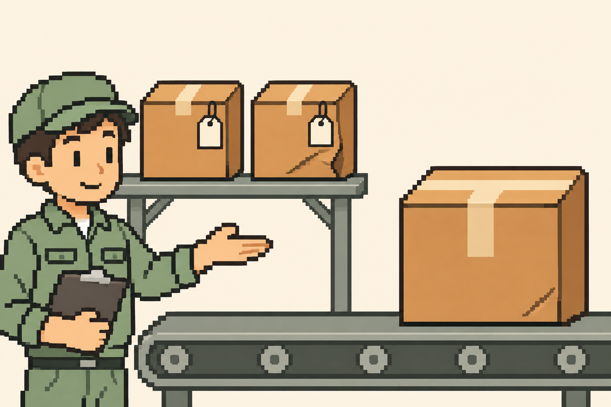
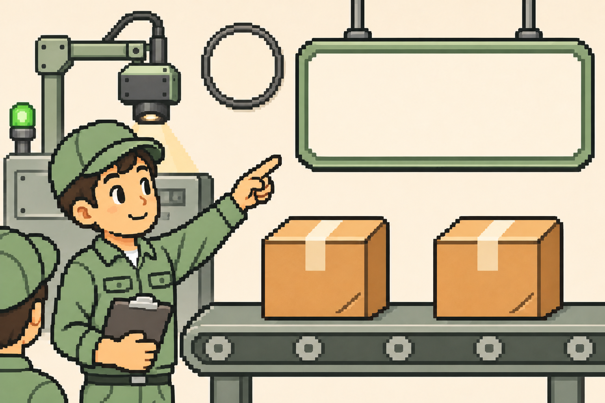
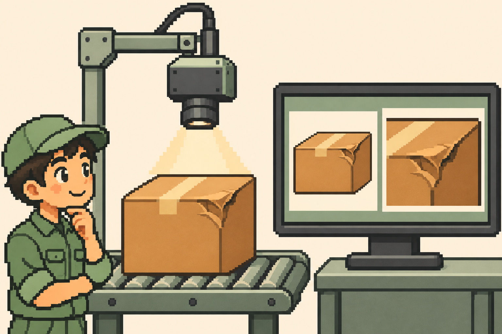
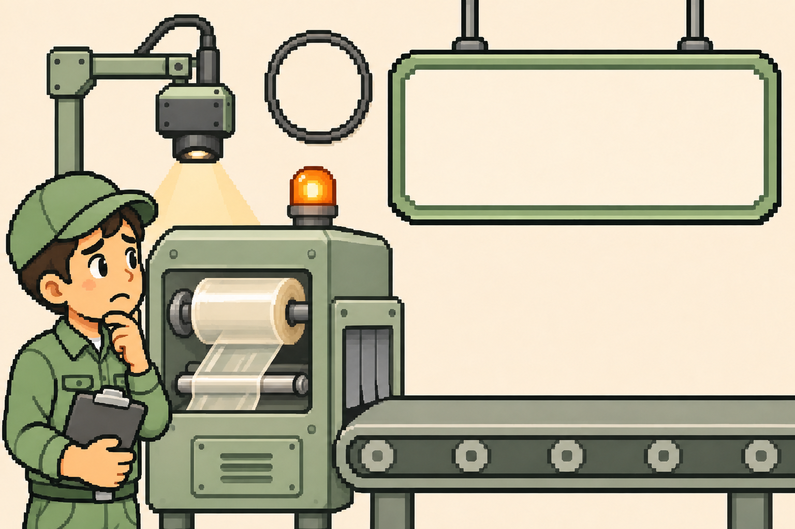

第0章の基準絵 → 同じ検査員・工場の第1話
深緑の帽子と作業着・黒髪・段ボールとテープ・緑のコンベア・クリーム色の内装を共通化。基準絵は上書きしていません。

基準：第0章「機械学習って、何？」public/illustrations/ml-inspected-samples.png

第1話：いつもの出荷public/illustrations/l003/usual-shipping.png札の集荷時刻はアプリ側で表示します。

基準：第0章「ディープラーニングって、何？」public/illustrations/dl-box-feature.png

第1話：午前、包装機が止まるpublic/illustrations/l003/packaging-stopped.png表情・箱の数・機械の状態を場面に合わせて変更。
本文と組み込んだ画面・誤判定／再判定は 実装報告 を参照。